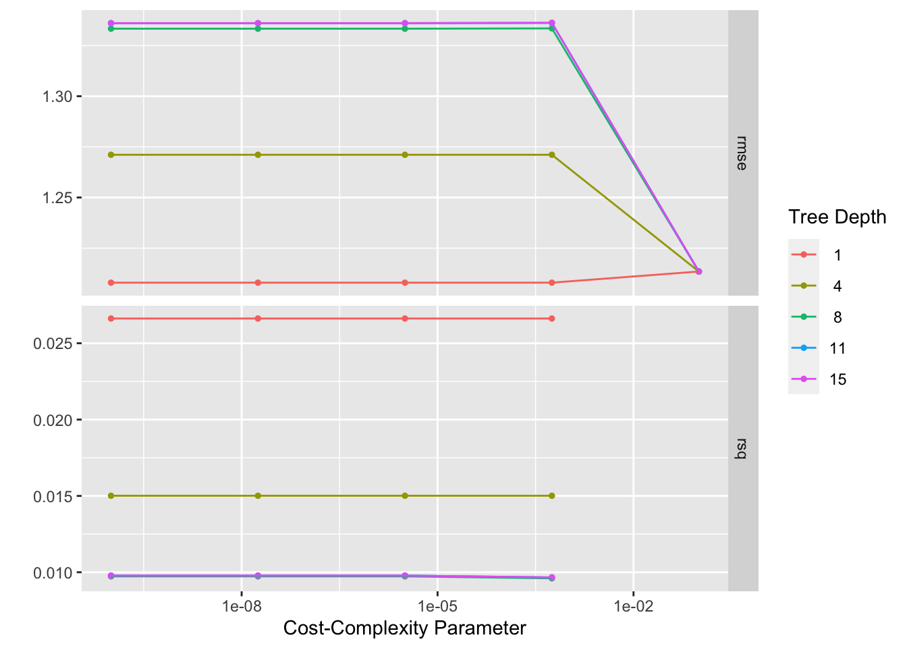
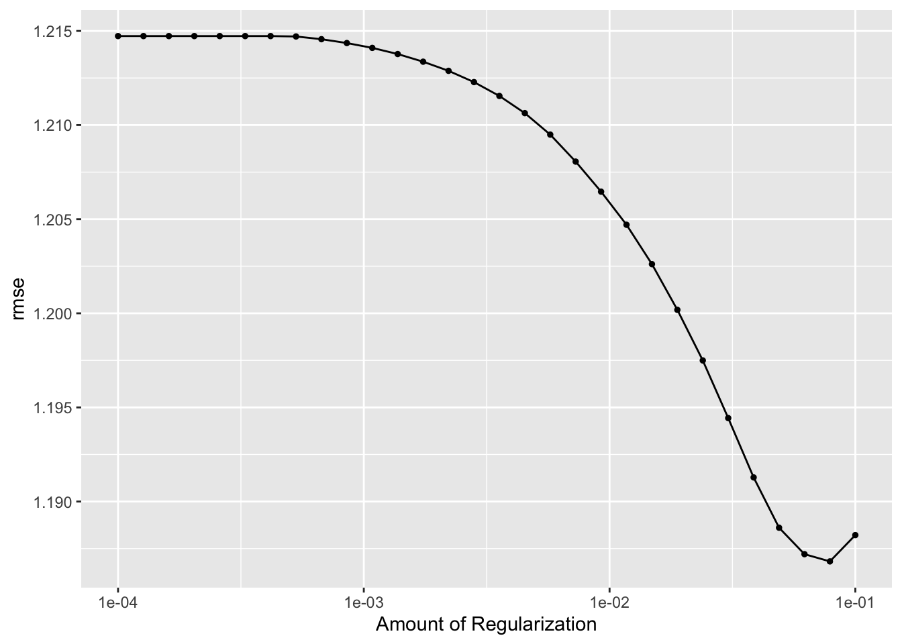
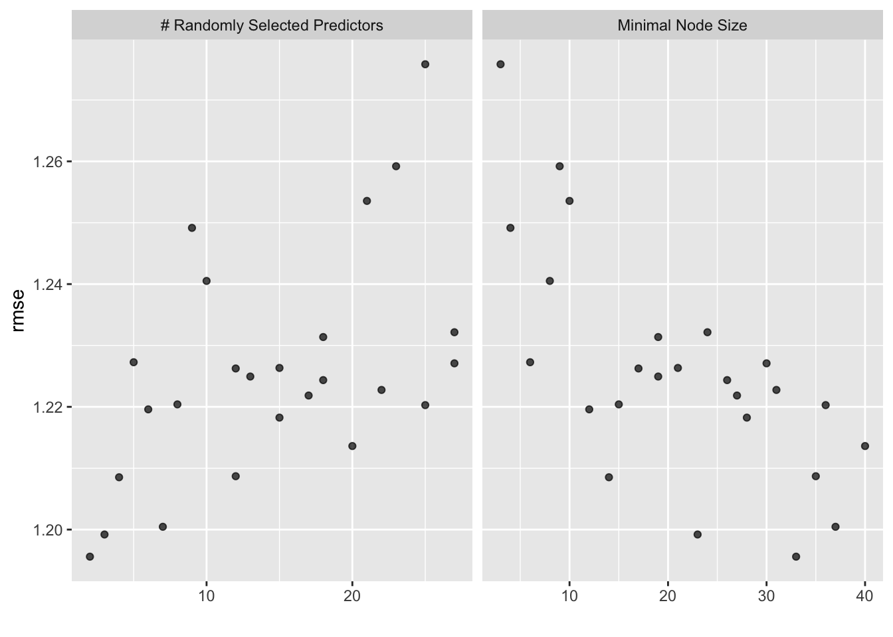
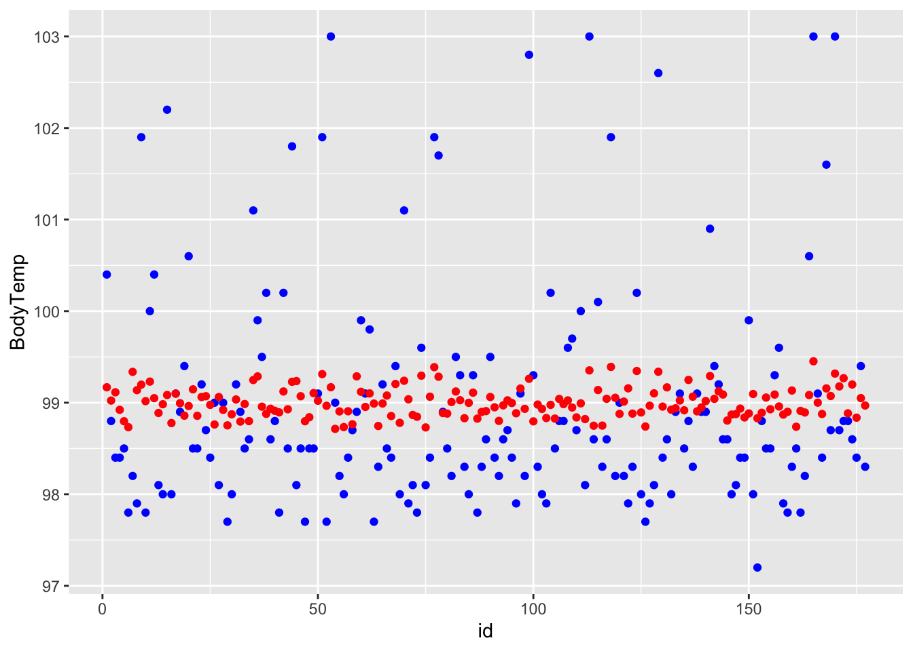
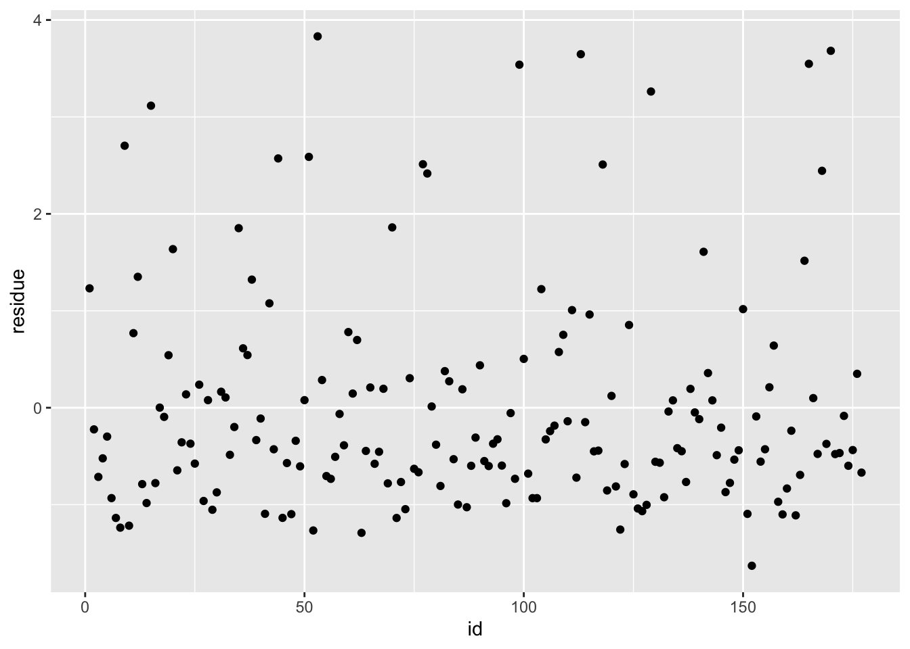

#load needed packages. make sure they are installed.
library(readxl) #for loading Excel files
library(dplyr) #for data processing##
## Attaching package: 'dplyr'## The following objects are masked from 'package:stats':
##
## filter, lag## The following objects are masked from 'package:base':
##
## intersect, setdiff, setequal, union## here() starts at /Users/zhihanxian/MADA2021/ZhihanXian-MADA-portfolio## ── Attaching packages ─────────────────────────────────────── tidyverse 1.3.1 ──## ✓ ggplot2 3.3.5 ✓ purrr 0.3.4
## ✓ tibble 3.1.5 ✓ stringr 1.4.0
## ✓ tidyr 1.1.4 ✓ forcats 0.5.1
## ✓ readr 2.0.2## ── Conflicts ────────────────────────────────────────── tidyverse_conflicts() ──
## x dplyr::filter() masks stats::filter()
## x dplyr::lag() masks stats::lag()## Registered S3 method overwritten by 'tune':
## method from
## required_pkgs.model_spec parsnip## ── Attaching packages ────────────────────────────────────── tidymodels 0.1.4 ──## ✓ broom 0.7.9 ✓ rsample 0.1.0
## ✓ dials 0.0.10 ✓ tune 0.1.6
## ✓ infer 1.0.0 ✓ workflows 0.2.4
## ✓ modeldata 0.1.1 ✓ workflowsets 0.1.0
## ✓ parsnip 0.1.7 ✓ yardstick 0.0.8
## ✓ recipes 0.1.17## ── Conflicts ───────────────────────────────────────── tidymodels_conflicts() ──
## x scales::discard() masks purrr::discard()
## x dplyr::filter() masks stats::filter()
## x recipes::fixed() masks stringr::fixed()
## x dplyr::lag() masks stats::lag()
## x yardstick::spec() masks readr::spec()
## x recipes::step() masks stats::step()
## • Dig deeper into tidy modeling with R at https://www.tmwr.org## Loading required package: rpart##
## Attaching package: 'rpart'## The following object is masked from 'package:dials':
##
## prune##
## Attaching package: 'vip'## The following object is masked from 'package:utils':
##
## vi## Loading required package: Matrix##
## Attaching package: 'Matrix'## The following objects are masked from 'package:tidyr':
##
## expand, pack, unpack## Loaded glmnet 4.1-3library(ranger)
#path to data
data_location <- here::here("files", "processeddata_m11.rds")
#load data.
mydata <- readRDS(data_location)
mydata = mydata %>% drop_na()
# This enables the analysis to be reproducible when random numbers are used
set.seed(123)
# Put 3/4 of the data into the training set
data_split <- initial_split(mydata, prop = 7/10, strata = BodyTemp)
# Create data frames for the two sets:
train_data <- training(data_split)
test_data <- testing(data_split)
set.seed(123)
folds <- vfold_cv(train_data, v = 5, repeats = 5, strata = BodyTemp)
folds## # 5-fold cross-validation repeated 5 times using stratification
## # A tibble: 25 × 3
## splits id id2
## <list> <chr> <chr>
## 1 <split [323/83]> Repeat1 Fold1
## 2 <split [323/83]> Repeat1 Fold2
## 3 <split [325/81]> Repeat1 Fold3
## 4 <split [326/80]> Repeat1 Fold4
## 5 <split [327/79]> Repeat1 Fold5
## 6 <split [323/83]> Repeat2 Fold1
## 7 <split [323/83]> Repeat2 Fold2
## 8 <split [325/81]> Repeat2 Fold3
## 9 <split [326/80]> Repeat2 Fold4
## 10 <split [327/79]> Repeat2 Fold5
## # … with 15 more rows# receipe for model with all predictors
data_rec <- recipe(BodyTemp ~ ., data = train_data) %>% step_dummy(all_nominal())
#RMSE for training set:
train_data_copy = train_data
train_data_copy$pred_by_null = mean(train_data_copy$BodyTemp)
train_data_copy %>% rmse(truth=BodyTemp,pred_by_null)## # A tibble: 1 × 3
## .metric .estimator .estimate
## <chr> <chr> <dbl>
## 1 rmse standard 1.22#RMSE for testing set:
test_data_copy = test_data
test_data_copy$pred_by_null = mean(test_data_copy$BodyTemp)
test_data_copy %>% rmse(truth=BodyTemp,pred_by_null)## # A tibble: 1 × 3
## .metric .estimator .estimate
## <chr> <chr> <dbl>
## 1 rmse standard 1.22################## decision tree model #################
tune_spec <-
decision_tree(
cost_complexity = tune(),
tree_depth = tune()
) %>%
set_engine("rpart") %>%
set_mode("regression")
tune_spec## Decision Tree Model Specification (regression)
##
## Main Arguments:
## cost_complexity = tune()
## tree_depth = tune()
##
## Computational engine: rpart## # A tibble: 25 × 2
## cost_complexity tree_depth
## <dbl> <int>
## 1 0.0000000001 1
## 2 0.0000000178 1
## 3 0.00000316 1
## 4 0.000562 1
## 5 0.1 1
## 6 0.0000000001 4
## 7 0.0000000178 4
## 8 0.00000316 4
## 9 0.000562 4
## 10 0.1 4
## # … with 15 more rows#tree_grid %>% count(tree_depth)
set.seed(123)
#cv_folds <- vfold_cv(train_data)
set.seed(123)
tree_wf <- workflow() %>%
add_model(tune_spec) %>%
add_recipe(data_rec)
tree_res <-
tree_wf %>%
tune_grid(
resamples = folds,
grid = tree_grid
)## ! Fold1, Repeat1: internal: A correlation computation is required, but `estimate` is const...## ! Fold2, Repeat1: internal: A correlation computation is required, but `estimate` is const...## ! Fold3, Repeat1: internal: A correlation computation is required, but `estimate` is const...## ! Fold4, Repeat1: internal: A correlation computation is required, but `estimate` is const...## ! Fold5, Repeat1: internal: A correlation computation is required, but `estimate` is const...## ! Fold1, Repeat2: internal: A correlation computation is required, but `estimate` is const...## ! Fold2, Repeat2: internal: A correlation computation is required, but `estimate` is const...## ! Fold3, Repeat2: internal: A correlation computation is required, but `estimate` is const...## ! Fold4, Repeat2: internal: A correlation computation is required, but `estimate` is const...## ! Fold5, Repeat2: internal: A correlation computation is required, but `estimate` is const...## ! Fold1, Repeat3: internal: A correlation computation is required, but `estimate` is const...## ! Fold2, Repeat3: internal: A correlation computation is required, but `estimate` is const...## ! Fold3, Repeat3: internal: A correlation computation is required, but `estimate` is const...## ! Fold4, Repeat3: internal: A correlation computation is required, but `estimate` is const...## ! Fold5, Repeat3: internal: A correlation computation is required, but `estimate` is const...## ! Fold1, Repeat4: internal: A correlation computation is required, but `estimate` is const...## ! Fold2, Repeat4: internal: A correlation computation is required, but `estimate` is const...## ! Fold3, Repeat4: internal: A correlation computation is required, but `estimate` is const...## ! Fold4, Repeat4: internal: A correlation computation is required, but `estimate` is const...## ! Fold5, Repeat4: internal: A correlation computation is required, but `estimate` is const...## ! Fold1, Repeat5: internal: A correlation computation is required, but `estimate` is const...## ! Fold2, Repeat5: internal: A correlation computation is required, but `estimate` is const...## ! Fold3, Repeat5: internal: A correlation computation is required, but `estimate` is const...## ! Fold4, Repeat5: internal: A correlation computation is required, but `estimate` is const...## ! Fold5, Repeat5: internal: A correlation computation is required, but `estimate` is const...## Warning: This tuning result has notes. Example notes on model fitting include:
## internal: A correlation computation is required, but `estimate` is constant and has 0 standard deviation, resulting in a divide by 0 error. `NA` will be returned.
## internal: A correlation computation is required, but `estimate` is constant and has 0 standard deviation, resulting in a divide by 0 error. `NA` will be returned.
## internal: A correlation computation is required, but `estimate` is constant and has 0 standard deviation, resulting in a divide by 0 error. `NA` will be returned.## # Tuning results
## # 5-fold cross-validation repeated 5 times using stratification
## # A tibble: 25 × 5
## splits id id2 .metrics .notes
## <list> <chr> <chr> <list> <list>
## 1 <split [323/83]> Repeat1 Fold1 <tibble [50 × 6]> <tibble [1 × 1]>
## 2 <split [323/83]> Repeat1 Fold2 <tibble [50 × 6]> <tibble [1 × 1]>
## 3 <split [325/81]> Repeat1 Fold3 <tibble [50 × 6]> <tibble [1 × 1]>
## 4 <split [326/80]> Repeat1 Fold4 <tibble [50 × 6]> <tibble [1 × 1]>
## 5 <split [327/79]> Repeat1 Fold5 <tibble [50 × 6]> <tibble [1 × 1]>
## 6 <split [323/83]> Repeat2 Fold1 <tibble [50 × 6]> <tibble [1 × 1]>
## 7 <split [323/83]> Repeat2 Fold2 <tibble [50 × 6]> <tibble [1 × 1]>
## 8 <split [325/81]> Repeat2 Fold3 <tibble [50 × 6]> <tibble [1 × 1]>
## 9 <split [326/80]> Repeat2 Fold4 <tibble [50 × 6]> <tibble [1 × 1]>
## 10 <split [327/79]> Repeat2 Fold5 <tibble [50 × 6]> <tibble [1 × 1]>
## # … with 15 more rows
## # A tibble: 1 × 3
## cost_complexity tree_depth .config
## <dbl> <int> <chr>
## 1 0.0000000001 1 Preprocessor1_Model01final_wf <- tree_wf %>% finalize_workflow(best_tree)
final_fit <- final_wf %>% fit(train_data)
df <- final_fit %>% augment(train_data) %>% select(.pred, BodyTemp) %>% mutate(residue = BodyTemp - .pred)
df$id <- seq.int(nrow(df))
ggplot() + geom_point(data = df, aes(x = id, y = BodyTemp), color = "blue") + geom_point(data = df, aes(x = id, y = .pred), color = "red")# blue curve is the actual, red curve is predicted
ggplot(df, aes(x = id, y = residue)) + geom_point()# residue plots, clearly shows a pattern, which is not good
a = a %>% filter(.metric=="rmse") %>% arrange(mean)
a## # A tibble: 25 × 8
## cost_complexity tree_depth .metric .estimator mean n std_err .config
## <dbl> <int> <chr> <chr> <dbl> <int> <dbl> <chr>
## 1 0.0000000001 1 rmse standard 1.21 25 0.0258 Preprocess…
## 2 0.0000000178 1 rmse standard 1.21 25 0.0258 Preprocess…
## 3 0.00000316 1 rmse standard 1.21 25 0.0258 Preprocess…
## 4 0.000562 1 rmse standard 1.21 25 0.0258 Preprocess…
## 5 0.1 1 rmse standard 1.21 25 0.0256 Preprocess…
## 6 0.1 4 rmse standard 1.21 25 0.0256 Preprocess…
## 7 0.1 8 rmse standard 1.21 25 0.0256 Preprocess…
## 8 0.1 11 rmse standard 1.21 25 0.0256 Preprocess…
## 9 0.1 15 rmse standard 1.21 25 0.0256 Preprocess…
## 10 0.0000000001 4 rmse standard 1.27 25 0.0256 Preprocess…
## # … with 15 more rows# best model rmse is 1.21, std is 0.0258, the null model rmse is 1.22, std = 0. Thus, the model is not that useful.
############# LASSO model ##############
lr_mod <- linear_reg(penalty = tune(), mixture = 1) %>% set_engine("glmnet") %>% set_mode("regression")
lr_workflow <- workflow() %>% add_model(lr_mod) %>% add_recipe(data_rec)
lr_reg_grid <- tibble(penalty = 10^seq(-4, -1, length.out = 30))
lr_res <-
lr_workflow %>%
tune_grid(resamples = folds,
grid = lr_reg_grid,
control = control_grid(save_pred = TRUE),
metrics = metric_set(rmse))
b = lr_res %>% collect_metrics()
lr_res %>% autoplot()
## # A tibble: 1 × 2
## penalty .config
## <dbl> <chr>
## 1 0.0788 Preprocessor1_Model29final_wf_lr <- lr_workflow %>% finalize_workflow(best_lr)
final_fit_lr <- final_wf_lr %>% fit(train_data)
df_lr <- final_fit_lr %>% augment(train_data) %>% select(.pred, BodyTemp) %>% mutate(residue = BodyTemp - .pred)
df_lr$id <- seq.int(nrow(df_lr))
ggplot() + geom_point(data = df_lr, aes(x = id, y = BodyTemp), color = "blue") + geom_point(data = df_lr, aes(x = id, y = .pred), color = "red")# blue curve is the actual, red curve is predicted
ggplot(df_lr, aes(x = id, y = residue)) + geom_point()# residue plots, clearly shows a pattern, which is not good
b = b %>% filter(.metric=="rmse") %>% arrange(mean)
b## # A tibble: 30 × 7
## penalty .metric .estimator mean n std_err .config
## <dbl> <chr> <chr> <dbl> <int> <dbl> <chr>
## 1 0.0788 rmse standard 1.19 25 0.0258 Preprocessor1_Model29
## 2 0.0621 rmse standard 1.19 25 0.0260 Preprocessor1_Model28
## 3 0.1 rmse standard 1.19 25 0.0256 Preprocessor1_Model30
## 4 0.0489 rmse standard 1.19 25 0.0261 Preprocessor1_Model27
## 5 0.0386 rmse standard 1.19 25 0.0261 Preprocessor1_Model26
## 6 0.0304 rmse standard 1.19 25 0.0262 Preprocessor1_Model25
## 7 0.0240 rmse standard 1.20 25 0.0263 Preprocessor1_Model24
## 8 0.0189 rmse standard 1.20 25 0.0264 Preprocessor1_Model23
## 9 0.0149 rmse standard 1.20 25 0.0265 Preprocessor1_Model22
## 10 0.0117 rmse standard 1.20 25 0.0265 Preprocessor1_Model21
## # … with 20 more rows# best model rmse is 1.19, std is 0.0258, the null model rmse is 1.22, std = 0. Thus, the model seems to perform the same as the tree model above.
################ random forest model ###############
cores <- parallel::detectCores()
cores## [1] 8rf_mod <-
rand_forest(mtry = tune(), min_n = tune(), trees = 1000) %>%
set_engine("ranger", num.threads = cores) %>%
set_mode("regression")
rf_workflow <-
workflow() %>%
add_model(rf_mod) %>%
add_recipe(data_rec)
set.seed(123)
rf_res <-
rf_workflow %>%
tune_grid(resamples = folds,
grid = 25,
control = control_grid(save_pred = TRUE),
metrics = metric_set(rmse))## i Creating pre-processing data to finalize unknown parameter: mtry
## # A tibble: 1 × 3
## mtry min_n .config
## <int> <int> <chr>
## 1 2 33 Preprocessor1_Model10final_wf_rf <- rf_workflow %>% finalize_workflow(best_rf)
final_fit_rf <- final_wf_rf %>% fit(train_data)
df_rf <- final_fit_rf %>% augment(train_data) %>% select(.pred, BodyTemp) %>% mutate(residue = BodyTemp - .pred)
df_rf$id <- seq.int(nrow(df_rf))
ggplot() + geom_point(data = df_rf, aes(x = id, y = BodyTemp), color = "blue") + geom_point(data = df_rf, aes(x = id, y = .pred), color = "red")# blue curve is the actual, red curve is predicted
ggplot(df_rf, aes(x = id, y = residue)) + geom_point()# residue plots, clearly shows a pattern, which is not good
c = c %>% filter(.metric=="rmse") %>% arrange(mean)
c## # A tibble: 25 × 8
## mtry min_n .metric .estimator mean n std_err .config
## <int> <int> <chr> <chr> <dbl> <int> <dbl> <chr>
## 1 2 33 rmse standard 1.20 25 0.0258 Preprocessor1_Model10
## 2 3 23 rmse standard 1.20 25 0.0258 Preprocessor1_Model13
## 3 7 37 rmse standard 1.20 25 0.0259 Preprocessor1_Model25
## 4 4 14 rmse standard 1.21 25 0.0256 Preprocessor1_Model06
## 5 12 35 rmse standard 1.21 25 0.0257 Preprocessor1_Model15
## 6 20 40 rmse standard 1.21 25 0.0253 Preprocessor1_Model23
## 7 15 28 rmse standard 1.22 25 0.0253 Preprocessor1_Model03
## 8 6 12 rmse standard 1.22 25 0.0253 Preprocessor1_Model18
## 9 25 36 rmse standard 1.22 25 0.0249 Preprocessor1_Model09
## 10 8 15 rmse standard 1.22 25 0.0254 Preprocessor1_Model21
## # … with 15 more rows# best model rmse is 1.20, std is 0.0258, the null model rmse is 1.22, std = 0. Thus, the model seems to perform the same as the two models above.
############### Model Selection #################
# It looks like the 3 models have the similar rmse values, and also same std. I do not know which model tends to overfit more, I will randomly pick one.
################ Final Fit ################
# I picked random forest model
last_fit <- final_wf_rf %>% fit(test_data)
df_rf_last <- last_fit %>% augment(test_data) %>% select(.pred, BodyTemp) %>% mutate(residue = BodyTemp - .pred)
df_rf_last$id <- seq.int(nrow(df_rf_last))
ggplot() + geom_point(data = df_rf_last, aes(x = id, y = BodyTemp), color = "blue") + geom_point(data = df_rf_last, aes(x = id, y = .pred), color = "red")
# blue curve is the actual, red curve is predicted
ggplot(df_rf_last, aes(x = id, y = residue)) + geom_point()
## # A tibble: 1 × 3
## .metric .estimator .estimate
## <chr> <chr> <dbl>
## 1 rmse standard 1.12